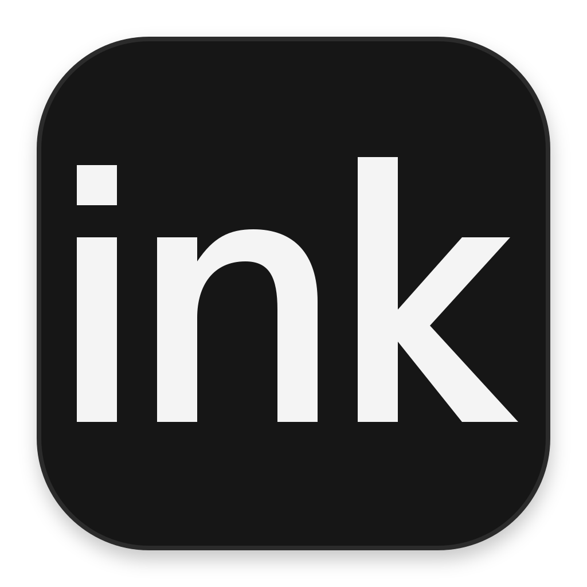

Connections
Use your local Ink OS or connect to a hosted instance.
Saved connections
Connect to a host
Label
Host origin
Account token
optional
A token connects this desktop and its CLI to the same account. You can also sign in in the host window. Account keys need the computer scope.
Allow a legacy host without an instance identity. Its HTTPS origin remains the connection boundary.
Cancel
Connect